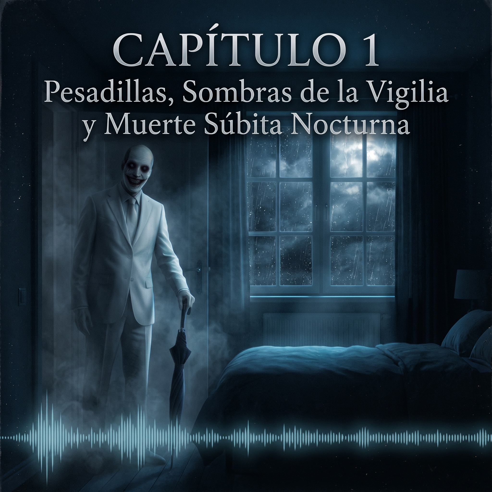

La Dramatización
Relatos inmersivos de terror psicológico y suspense narrados en primera persona, donde la realidad cotidiana se resquebraja en la penumbra.
«Cuando la luna asoma tímidamente entre las sombras y la ciudad duerme sumergida en su silencio... ¿Preparado para mirar al otro lado?»
Tres actos para descender desde el relato inmersivo hasta la frialdad del expediente histórico.
Relatos inmersivos de terror psicológico y suspense narrados en primera persona, donde la realidad cotidiana se resquebraja en la penumbra.
Análisis neurobiológico, psicológico y literario guiado por Serafín para comprender los mecanismos ocultos de la mente.
Crónica negra y casos históricos rigurosamente documentados presentados por Aurora, donde la realidad supera la ficción.

El viaje inaugural de El Peregrino de la Medianoche explora esa franja helada en la que el cuerpo permanece paralizado en la cama mientras la mente despierta atrapada dentro de una alucinación hipnagógica, junto al enigma médico del Síndrome de Muerte Súbita Inexplicada Nocturna.